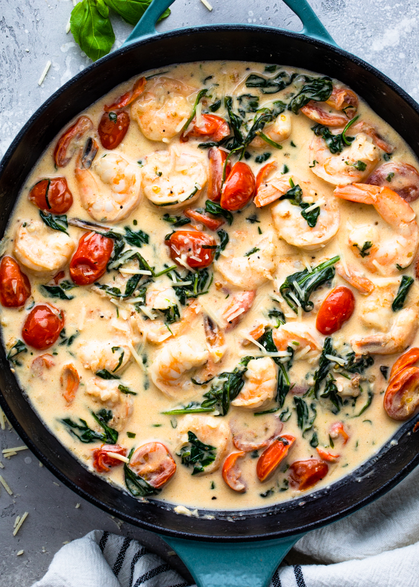

Home
Tuscan Butter Shrimp

Description
Tuscan Butter Shrimp is a creamy, rich dish featuring
succulent shrimp cooked in a flavorful sauce made with butter, garlic,
sun-dried tomatoes, spinach, and a touch of Parmesan cheese. The result is
a smooth, indulgent sauce that perfectly complements the shrimp, often
served over pasta or with crusty bread for dipping.
Ingredients
- Shrimp
- Butter
- Garlic
- Sun-dried tomatoes
- Fresh spinach
- Parmesan cheese
- Heavy cream
- Salt and pepper
Cooking Directions
-
Cook the shrimp: Heat butter in a skillet, add shrimp, and cook until
pink. Remove and set aside.
-
Make the sauce: In the same skillet, add more butter, minced garlic, and
sun-dried tomatoes. Sauté until fragrant.
-
Add spinach and cream: Stir in spinach and cook until wilted. Add heavy
cream and bring to a simmer.
-
Combine shrimp and sauce: Return the shrimp to the skillet and toss in
the creamy sauce until fully coated.
-
Finish and serve: Stir in Parmesan cheese, season with salt and pepper.
Serve with pasta or crusty bread.